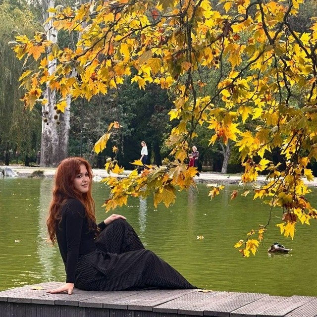

Birthday
Issue 19 / Love notes
06 / Глава 5 · Love notes
What we love about Sabrina?
Она очень добрая
Доброту человека можно увидеть по тому, как он относится к окружающим его существам, а именно к животным. Сабрина тот человек, который погладит всех одиноких и бездомных животных
Она прекрасный друг
Это человек, который пройдёт с вами огонь и воду, обсудит все интересные и не очень вещи, а главное согласится на любой досуг, будь то культурный поход в театр или поездка в другой город на автобусе
Она всегда поддержит
Если у Вас нет настроения жить, то у Сабрины всегда есть запас мемов, для оказания вам экстренной помощи, но иногда такая помощь нужна ей самой
Она очень творческая
Учится на архитектора и строит макеты прекрасных домиков! А параллельно с этим поёт, играет музыку и находит время для себя)
